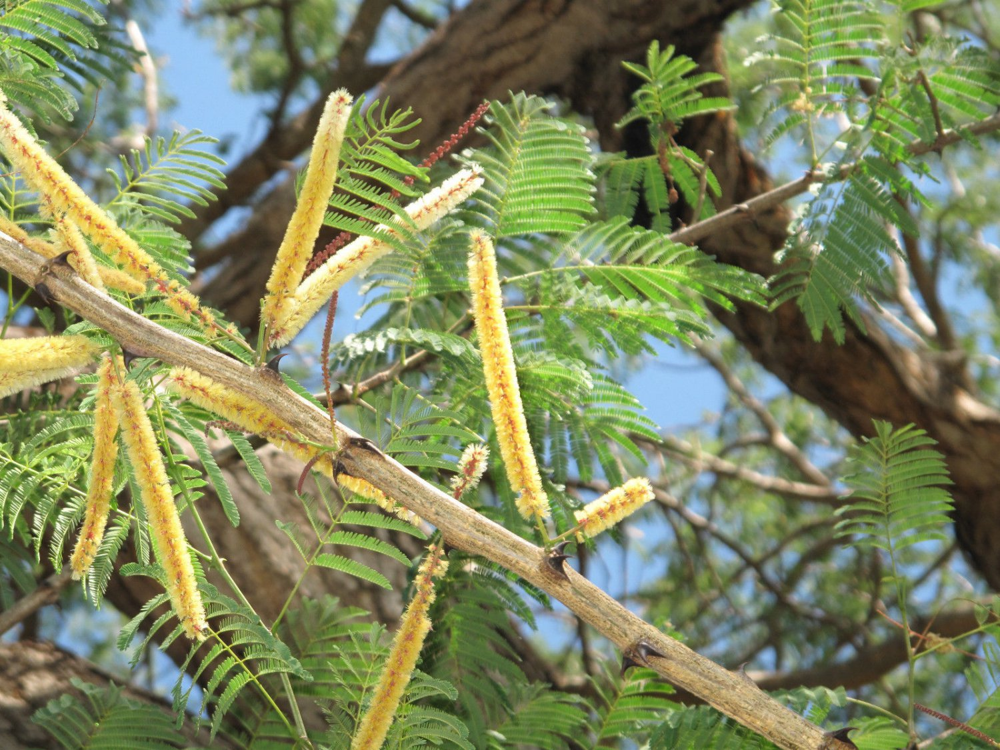

Latthe Education Society's Acharya Deshabhushan Ayurvedic Medical College And Hospital Bedkihal-Shamanewadi, 591214
Department of Dravyaguna Vigyana

Basonym of Drug
Khadira
Main Synonym
Swetasara
Kadara
Somavalakala
Sweta Khadira
Regional Name
Gujarati: Khera, Katho
Hindi: Kher, Kattha
Malayalam: Khair, Kath
Tamil: Karngali
Telugu: Chandra
English: Black Catechu
Botanical Name
Acacia catechu
Family
Mimosoideae
Classification (Gana)
Aacharya Charaka: Kusthagna, Udardaprashamana Mahakashaya, Kashaya Skandha
Aacharya Sushruta: Salsari Gana
Aacharya Vagbhatta: Asanadi Gana
External Morphology
15-20 meter high tree
Useful Parts
Heartwood
Stem bark
Flower
Important Phytoconstituent
Catechine
Catechutannic Acid
Rasa Panchak
Rasa: Tikta, Kashaya
Guna: Laghu, Ruksha
Virya: Shita
Vipaka: Katu
Action
Kaphapittahara
Therapeutic Indication
Kandughna (treat pruritus)
Kusthaghna (useful in skin disorders)
Deepan (appetizer)
Medohara (reduces fat accumulation)
Dantya (good for teeth)
Vranaropaka (wound healer)
Therapeutic Uses
Kustha - Decoction of Khadira is beneficial internally and externally for skin diseases.
Shlipada - Paste of Khadirasara, Salasara, and Bijakasara with honey and cow urine in the morning is useful in filariasis.
Dantashoola - Khadirasara powder is useful to treat toothache as Manjana.
Dose
Bark Powder: 1-3 gm
Decoction: 50-100 ml
Heartwood Powder: 0.5-1 gm
Formulations
Khadiradi Vati
Khadiradhya Taila
Khadiraristha
Adverse Effect
Not Known
Remedial Measure
Not required